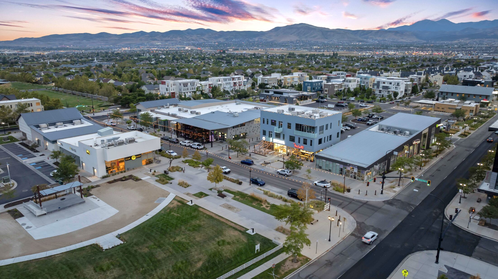

Daybreak, Utah Real Estate Market Update
Where prices, pace, and inventory stand in Daybreak right now, and what it means if you're buying or selling.
Read the guide →Everything we know about buying, selling, and living in Daybreak, South Jordan, written down so you don't have to guess.
Where prices, pace, and inventory stand in Daybreak right now, and what it means if you're buying or selling.
Read the guide →What to know before you make your first offer in Daybreak, from budgeting to village selection.
Read the guide →Considering a cash sale for your Daybreak, UT home? Learn how to bypass traditional listings, skip expensive repairs, and close on your own timeline.
Read the guide →The deep-dive breakdown of Garden Park, SoDa Row, Highland Park, Eastlake, Creekside, and Founders Park, with a quick-scan comparison table.
Read the guide →What out-of-state and out-of-area buyers ask us most before moving to Daybreak.
Read the guide →What your $144.50 monthly fee actually buys you, how sub-association costs differ, and whether Daybreak's HOA lifestyle is right for you.
Read the guide →What the added $240/month (or ~$31,000 lump sum) assessment actually covers, which units it applies to, and how to check before you buy or sell.
Read the guide →Thinking about buying a home in Daybreak, UT? This guide covers local home prices, HOA life, trails, and what to expect in this master-planned community.
Read the guide →Comparing the best neighborhoods in Daybreak, UT? This comprehensive 2026 guide breaks down each village by home prices, local amenities, and lifestyle fit.
Read the guide →The Zander Real Estate Team is the best real estate agent choice in Daybreak, UT. Local specialists put your goals first from first showing to closing day.
Read the guide →Founders Village in Daybreak, UT features a $525K median sale price, walkable dining at SoDa Row, and strict short-term rental rules. Learn more before buying.
Read the guide →Eastlake Village in Daybreak, UT offers lakefront homes, townhomes from the $400Ks, and walkable access to SoDa Row dining. See what buying here looks like.
Read the guide →Homes near Harvest Village in Daybreak, UT sell around $574,000, with layered HOA fees, a 12-month owner-occupancy rule, and 22 miles of trails to Oquirrh Lake.
Read the guide →Lakeside Village in Daybreak, UT offers condos, townhomes, and estates on Oquirrh Lake. See home prices, HOA fees, schools, and commute options for 2026.
Read the guide →Monarch Village in Daybreak, UT blends single-family homes and townhomes near TRAX, trails, and a 24-hour ER. Prices track near South Jordan's $630K median.
Read the guide →Summerview Village in Daybreak, UT offers detached homes and townhomes near $630K. Learn about HOA costs, local schools, and what 99% list-price sales mean.
Read the guide →Buyers searching Overlake Village in Daybreak, UT find established homes near Overlook Park from the mid-$500Ks, with trail access, HOA, and school details.
Read the guide →Kestrel Village in Daybreak, UT spans multiple sub-associations along Kestrel Rise Road. Homes range from $350K to $1M+ with walkable dining and an ER nearby.
Read the guide →Blossom Village in Daybreak, UT offers walkable streets, HOA amenities, and a median price near $630K. See property types, schools, and commute details.
Read the guide →Arrowhead Village in Daybreak, UT tracks a $630K South Jordan median with TRAX access, Jordan School District zoning, and walkable rear-loaded streets.
Read the guide →The most expensive areas in Daybreak, UT cluster near the water. See which villages top $1M, what The Island costs, and where luxury listings hit $2.5M.
Read the guide →Founders Village vs Founders Park Village in Daybreak, UT are the same 2004 neighborhood. Get pricing, HOA fees, and what to know before you make an offer.
Read the guide →Eastlake Village averages $651K while Founders Village sits near $525K. Compare home styles, HOA fees, and commutes in Daybreak, UT's two oldest neighborhoods.
Read the guide →"Harvest Village" isn't actually in Daybreak. Learn how Harvest Villas compares to Springhouse Village in Daybreak, UT on price, HOA access, and amenities.
Read the guide →Lakeside Village vs. Lake Village in Daybreak, UT is mostly a naming question. Both sit on Oquirrh Lake, share one HOA, and list from $480K to $2.4M.
Read the guide →The Daybreak, UT housing market is moving quickly in 2026. Review median home prices, days on market, and what buyers and sellers should expect this year.
Read the guide →Thinking about moving to Daybreak, UT? Weigh the HOA fees, master-planned perks, commute times, and community trade-offs before you make your final decision.
Read the guide →Compare the types of homes in Daybreak, UT, ranging from cottages and single-family houses to townhomes and condos. Find the style that fits your lifestyle.
Read the guide →Planning a move to Daybreak, UT? Zip codes in this master-planned community affect school boundaries, HOA zones, and home search results for new buyers.
Read the guide →We're adding new Daybreak buyer, seller, and lifestyle guides on an ongoing basis. Have a question you want covered? Ask us below.

Have a question about buying, selling, or just want to talk through your options? We'll follow up personally.